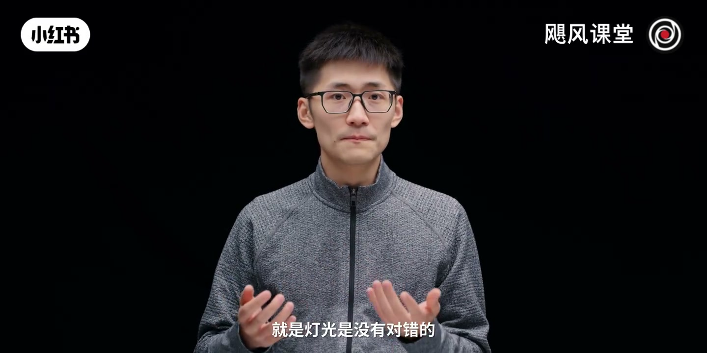
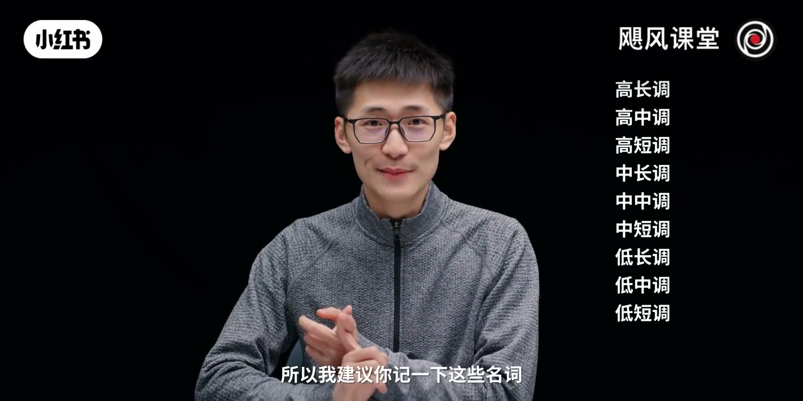
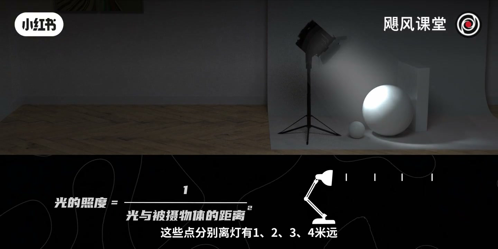
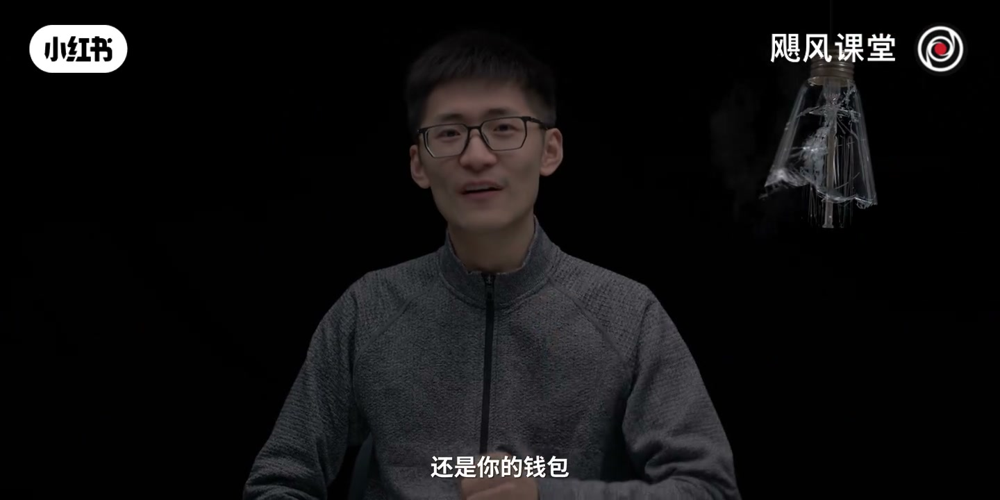
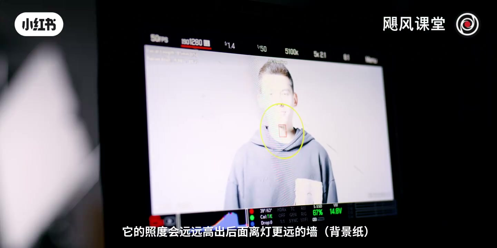
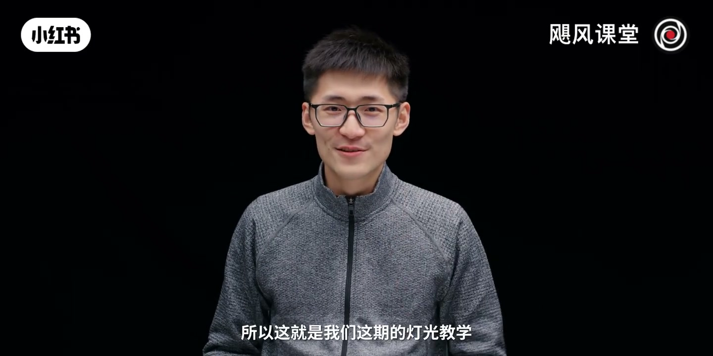

内容要点
「【灯光教程二】为什么我打的灯这么暗？」教程要点：好各位我是Tim → 欢迎收看本期影视飓风 → 这是我们灯光科普的第二期 → 上一次我们理解了灯光的性质；详见正文。
知识结构
好各位我是Tim
那二米处根据这个公式
来构建纵深
- 好各位我是Tim
- 欢迎收看本期影视飓风
- 这是我们灯光科普的第二期
- 上一次我们理解了灯光的性质
- 什么是硬光 什么是柔光
好各位我是Tim
00:00–02:55好各位我是Tim
好各位我是Tim；欢迎收看本期影视飓风；这是我们灯光科普的第二期；上一次我们理解了灯光的性质；什么是硬光 什么是柔光；但之后有很多朋友问我说；在录Talking；也就是像我们这样讲话的时候；或者说在拍纪录片；人物采访的时候；为什么感觉光已经打到人脸上了；但在镜头里面看起来；脸上的光还是很暗 很硬；画面一点都没有这种电影感；或者说有的时候；我只是想把人脸给打亮；但是背景也被打亮了；那我应该怎么办；那其实这里我们可以先讲一个道理；就是灯光是没有对错的；就你想要有强的对比；还是一个低的反差；这都完全取决于你；你可以想打教父里面这样这种；特别深邃 塑造人物的硬光；大光比；也可以打像机械机里面；这个电影非常好 非常推荐；里面这种看起来高科技很亮；但是又冰冷 大柔光；这种光比就会非常小；那这些光的明暗还有对比；其实在学术上都是有自己的名字的；就光的亮暗；我们通常会用高调还有低调来描述；高调就是亮 低调就是暗；而画面中的对比还有反差；我们通常会用长中短来描述；那长代表高反差；而短代表低反差；那结合刚才我们所谓的高中低调；你其实算一下就可以得到九个词；那像高长调；就是高亮高反差的画面；中短调；那就是标准亮度低反差的画面；那低中调就是低亮度标准反差的图像；那这样分类虽然有点绕口；但是可以更好地帮助导演；或是摄影指导精确地表达；他们对灯光的期望；所以我建议你记下这些名词；以后也许会用到；而今天我们要来学习一个非常重要的理论；它会帮助你从更好的底层；理解灯光的逻辑；来打出刚才我们所说的这些你想要的光；首先这个理论涉及到的是光墙；还有距离的关系；一个散射的点光源；离被射物体越近；那被射物体自然就会更亮；那这个是常识；但它们的关系并不是线性的；这里我要说的慢一点；也就是说光的衰减；不是说我拿出一米的距离；它的亮度是一；而二米它就变成二分之一；三米就变成三分之一；不是这样 记住；不是这样；事实上这个数据的变化；会比你想象的要可怕很多；它可以用一个公式来解释；就是我们今天的重点；叫做平方反比定律；千万别被这种炸炸乎乎的名字给吓住；众所周知；我们小学二年级就学过这样的公式；那光的照度；等于一除以被射物体的距离的平方；听不明白的话没有关系；我们来做个实验；那假设这里有一个点光源；还有一些点；这些点分别离灯；有一 二 三 四米远；那设定一米处的点；受到的光是百分之一百


02:54–05:34那二米处根据这个公式
那二米处根据这个公式；来算一下的话；就是一除以二的平方；就是四分之一；百分之二十五；但当你算三米处的时候；你就会发现；它变成了九分之一；那大概就是百分之十一；而四米处；最终就只有十六分之一；也就是百分之六；这个我们量化到现实中来看一看；这盏灯是一个五十瓦的台灯；而这盏灯是一个经典的红头灯；八百瓦的功率；虽然这两个都是；不是特别完美的点光源；不是完全符合逻辑；但是你能够足够看到差异；当你把五十瓦的台灯；放在一米的距离；红头灯放在四米的距离；不说别的；它俩的曝光现在特别的接近；那这意味着当你把距离拉远；你其实还损失巨量的光；你想从更远的距离；打出同样的照度；你这些灯的功率；也需要成指数的增加；无论是灯光的体积；还是你的钱包；都会有巨大的损失；但有意思的地方就不只是这样；因为它是一个平方反比；曲线是这样的；那你会观测到的一个现象就是；一开始拉远的时候；照度衰减非常巨大；但是当你越拉越远；衰减的速度也在越来越慢；那这是一个什么意思呢；说人话就是；假如说你想打亮一个被射物体；打得特别特别亮；你需要尽大可能去靠近它；和它贴贴；贴得越近；就转得越多；那明白了这个道理的话；我们也来看看在实战中；这个定理会产生什么样的效果；那我们准备了一张白色的背景纸；让人站在背景纸前面；灯光放在尽量远的位置；那你可以看到；此时人和背景纸都被打亮了；两者的曝光都非常接近；但整个画面看起来就显得非常平；没有什么对比和反差；那接着我们保持人；背景纸；还有摄影机都不移动；只是把灯不断地靠近人；你会立刻观察到现象就是；人现在迅速就过曝了；但是后面的这个背景纸；却没有过曝；现在人因为距离灯非常接近；他的照度会远远高出；后面离灯更远的墙；那我们现在调整一下曝光；把人给正确曝光；你就会发现；现在背景就显得非常的暗了；这样其实；你就通过这个镂子；实现了大多数科技博主的这个曝光镂子；因为你创造了一个更大的光比；这样通常看起来画面会有更强的反差；也就突出了人物的主体；这也是为什么通常你会看到；我们会在前面把这个柔光灯摆得这么近；一方面是为了让这个光显得非常柔；另一方面也是为了和背景来拉出这个反差；而背景里；我又有可能贴墙方一些小灯；这样会显得很亮；可以来点缀画面


05:32–08:48来构建纵深
来构建纵深；所以我们无时无刻不再运用这个平方反比定率；但这个时候；又有朋友要说话了；假如我的房间就这么小；拉不出这个距离；我人就只能贴着墙拍；那怎么样能拍出反差呢；那想什么呢小伙子；这个不可能的；这也是为什么当初；假如你看一下我过去的视频；很早以前的视频；我还在上学的时候；我的房间纵深；只有一米五到两米之间；所以为了最大化前后景的距离；我都必须要把灯架在我的床上；贴墙；这样的话才可以有一个比较好的这个明暗分离；其实以前我还考虑过把床给扔出去；然后睡在一个睡袋里；这样的话可以有更多的空间；这是当初我做出的一些牺牲上的想法；尤其是在拍摄纯黑背景的时候；像我们现在这种背景；距离就直接影响到你黑色的纯净度；这也是为什么高级感会有这些差别；因为很纯的黑色看起来会更舒服；所以在距离上面你需要特别注意；那当然除了拉远；你还是可以学会遮光；而来进一步帮助你创造一个纯净的黑色；就把光控制在你的手心里面；这个内容的话；我们接下来的课里会讲到；就是使用各种控光的配件；那现在你理解了我们上一节课的柔光还有硬光；以及这节课的平方反比定率；学会了的朋友可以扣个1；恭喜你 非常棒；你掌握了一个非常重要的技能；你现在就可以利用你身边的这些灯光还有东西；逻辑上可以打出非常接近；我们现在这样不光的画面了；那如果你有做的测试；可以像这样；做一张图发一个动态；艾特我们一下；我们想整理一些大家的不光方案；和结果来分享出来；被选中的朋友；我们可以点点小奖品什么的；但我更希望的就是大家互相之间能够交流；来学到更多的东西；很多人以为就是只要相机足够好；灯光稍微烂一点；拍出来的东西也能够被抢救回来；虽然一定逻辑上有一点帮助；但很多时候是正好相反的；就合适的灯光；反而能够帮助很多平平无奇的相机；甚至手机拍出非常棒的效果；那现在诺兰处女做的长篇这个追随；预算只有6000美金；6000美金 听起来不少；但是这是一个长篇；她在整个片子里面只用了几盏红头灯；还有巫师灯；还经常让主人公站在窗边；利用自然光来照射 进行打光；但是可以看到；出蓝效果仍然非常不错；所以不要担心你自己的灯光不够好；设备不够好；这些我相信当你进入行业之中；你慢慢都会用上越来越好的设备；但灯光打光本身；才是看经验 看个人能力的；你必须要多打去理解它独特的语言；这样才能够创作出更加优秀的作品；所以这就是我们这期的灯光教学；希望对你有些帮助；如果有帮助的话；请务必关注我们；然后点赞 投币 三连；转发给你的朋友；假如他们也对不光感兴趣的话；谢谢大家；那么我们下期再见


口述/画面要点（40段）
结合 Whisper medium 与画面大字整理；专有名词已校对。
好各位我是Tim
欢迎收看本期影视飓风
这是我们灯光科普的第二期
上一次我们理解了灯光的性质
什么是硬光 什么是柔光
但之后有很多朋友问我说
在录Talking
也就是像我们这样讲话的时候
或者说在拍纪录片
人物采访的时候
为什么感觉光已经打到人脸上了
但在镜头里面看起来
脸上的光还是很暗 很硬
画面一点都没有这种电影感
或者说有的时候
我只是想把人脸给打亮
但是背景也被打亮了
那我应该怎么办
那其实这里我们可以先讲一个道理
就是灯光是没有对错的
就你想要有强的对比
还是一个低的反差
这都完全取决于你
你可以想打教父里面这样这种
特别深邃 塑造人物的硬光
大光比
也可以打像机械机里面
这个电影非常好 非常推荐
里面这种看起来高科技很亮
但是又冰冷 大柔光
这种光比就会非常小
那这些光的明暗还有对比
其实在学术上都是有自己的名字的
就光的亮暗
我们通常会用高调还有低调来描述
高调就是亮 低调就是暗
而画面中的对比还有反差
我们通常会用长中短来描述
那长代表高反差
而短代表低反差